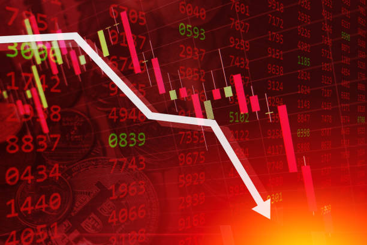
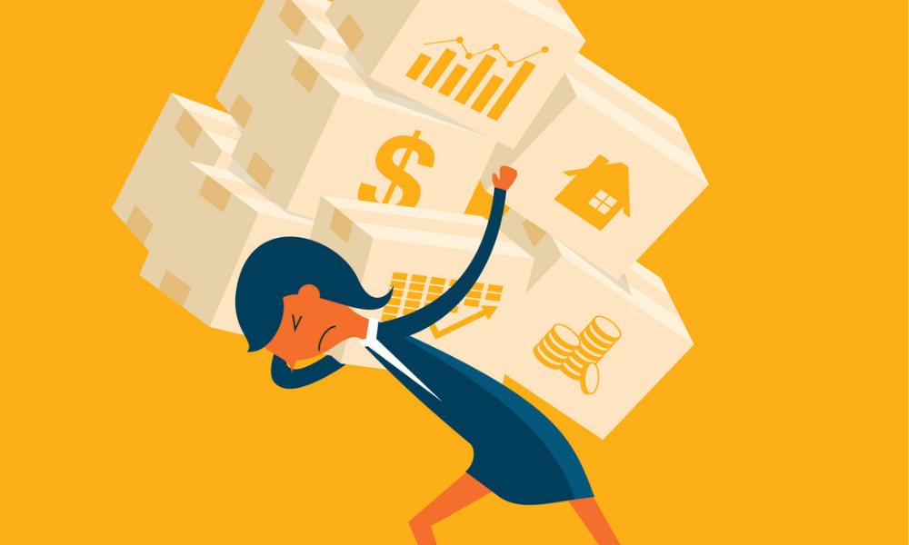
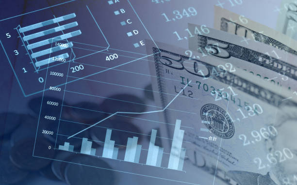

What Is Inflation
Inflation is the rate at which the general level of prices for goods and services rises over time, resulting in a decrease in purchasing power. It affects various economic aspects, including household budgets, business costs, and economic policies. Understanding inflation’s causes, effects, and potential solutions is essential for individuals, businesses, and policymakers to make informed financial and strategic decisions. Often influenced by factors such as demand, supply chains, and currency policies, inflation reflects the overall health and stability of an economy.
The Effects of Inflation
Decreased Purchasing Power
When inflation rises, the purchasing power of each unit of currency falls. This means that consumers need to spend more to acquire the same goods or services as before. For example, if inflation is high, the price of essential items like groceries, fuel, and clothing increases, making it challenging for individuals to maintain their standard of living. This impact is felt most by people with fixed incomes or limited wage increases, who may find it increasingly difficult to afford their daily needs.
Increased Cost of Living
As prices for goods and services rise, the overall cost of living escalates, affecting families, especially those who are already financially vulnerable. Inflation impacts expenses like rent, healthcare, education, and transportation. This effect is particularly noticeable in sectors where prices cannot be easily controlled. For households with tight budgets, inflation can lead to difficult decisions, like cutting back on essentials or seeking additional income sources, to make ends meet.
Impact on Savings
When inflation outpaces interest rates on savings accounts, the real value of saved money diminishes over time. This means that the money saved today will have less buying power in the future, which discourages saving and may push people toward riskier investments to try to maintain their wealth. Inflation erodes the financial security that savings can provide, making it harder for individuals to plan for future goals like retirement, education, or emergency funds.
Solutions to Control Inflation
Monetary Policy
Central banks, such as the Federal Reserve, implement monetary policy to manage inflation by adjusting interest rates, buying or selling government securities, and controlling money supply. When inflation is high, central banks may raise interest rates, making borrowing more expensive, thereby reducing spending and cooling off demand-driven inflation. This approach can help stabilize prices, but it also requires careful balance to avoid stifling economic growth.
Fiscal Policy
Governments can use fiscal policy tools, including tax adjustments and changes in government spending, to influence inflation. For instance, reducing public spending can lower demand within the economy, easing inflationary pressures. Conversely, increasing taxes can reduce disposable income, which can also help cool demand. Fiscal policy, however, must be carefully designed to avoid negative impacts on employment and overall economic growth.